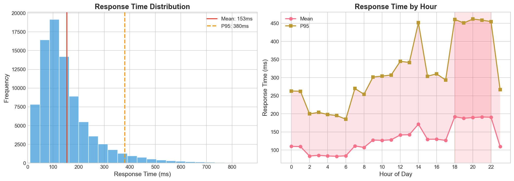

Total Requests
85,137
Avg. Daily Requests
8514
Mean Response Time
153 ms
P95 Response Time
380 ms
Error Rate
4.53%
Total Errors
3,854
- Peak hours (6-10 PM) see a 2.78x increase in traffic compared to off-peak.
- Response times are generally stable, with P95 below 1s for most days.
- Error rates remain low, with spikes during peak load and for certain endpoints.
- All data and visualizations are synthetically generated for demonstration.
Traffic Analysis


Performance Metrics



Error Analysis